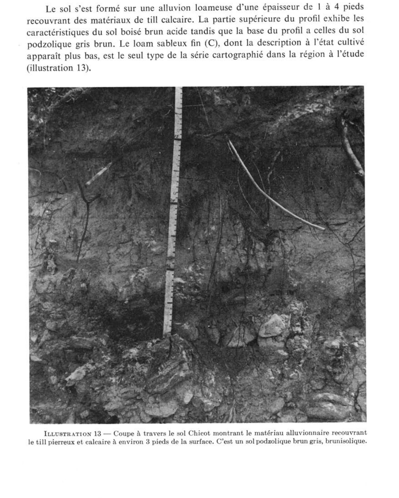
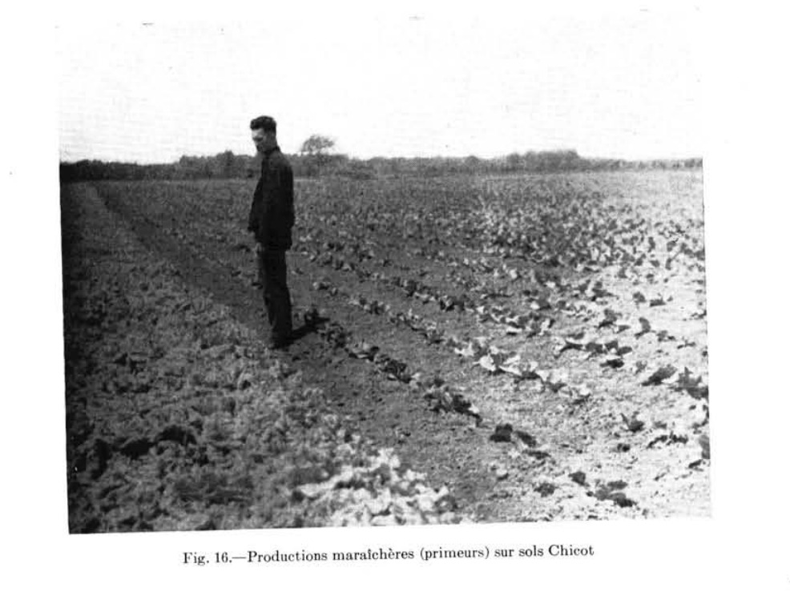

Identification & Caractéristiques Générales
La série Chicot comprend des sols minéraux développés sur un dépôt meuble biparité, caractérisé par une couche superficielle de sédiments alluvionnaires ou glaciolacustres à texture fine, principalement du sable fin, du loam sableux fin ou du sable limoneux fin, d'une épaisseur variant de 30 à 120 centimètres. Ce manteau supérieur repose en discontinuité lithologique sur un till morainique de fond à matrice calcaire, comportant parfois des interstratifications discontinues de texture argilo-sableuse à la surface du contact. Sur le plan géomorphologique, ces sols occupent des positions topographiques de plaines ondulées à légèrement vallonnées, ainsi que les pentes d'arêtes morainiques et de collines de faible étendue, caractérisées par des déclivités généralement comprises entre 3 et 8 %.
Le profil pédologique présente un drainage naturel modérément bon, bien que des phases à drainage imparfait soient répertoriées en fonction de la position dans le paysage. La perméabilité est modérée dans la partie supérieure meuble, tandis que le sous-sol morainique compact offre une résistance accrue au mouvement vertical de l'eau, susceptible de générer une nappe perçue temporaire lors de fortes précipitations ou de la fonte nivale. La pierrosité de surface et du solum est généralement faible, voire nulle, bien que le substratum de till puisse contenir des cailloux et des blocs calcaires. La capacité de rétention en eau est modérée dans le solum. En raison de la texture meuble des horizons supérieurs et de la topographie en pente, le profil montre une sensibilité marquée à l'érosion hydrique en surface, notamment lors des épisodes de ruissellement intense sur sol gelé ou nu.
Sur le plan agronomique, les sols de la série Chicot constituent des terres arables de bonne valeur pour la production des grandes cultures, des cultures fourragères et du maraîchage, en raison de leur texture favorable et de l'absence de pierrosité limitante. Les principales contraintes à la mise en valeur agricole résident dans la susceptibilité à l'érosion hydrique sur les pentes et la gestion du régime hydrique lors des périodes excédentaires. La régie agronomique requiert la mise en place de pratiques de conservation des sols, telles que le travail minimal ou en courbes de niveau, l'implantation de cultures de couverture pour atténuer le ruissellement, ainsi qu'un drainage souterrain d'appoint dans les secteurs de transition à ressuyage plus lent. Des apports calcaires réguliers peuvent également être requis pour maintenir un pH optimal selon les exigences des cultures pratiquées.
Classification Taxonomique & Environnement Pédologique
| Ordre Pédologique | Brunisolique |
|---|---|
| Grand Groupe (SCSS) | Brunisol mélanique |
| Sous-Groupe Taxonomique | Brunisol mélanique gleyifié |
| Famille Pédologique | Loameuse, mixte sableux, alcalin (calcaire) |
| Mode de Dépôt Parental | Fluviatile sur morainique |
| Classe de Drainage Naturel | Modérément bien drainé |
| Régime Thermique & Humidité | Doux / Subhumide |
Description Morphologique du Profil Type
Séquences génétiques des horizons pédologiques caractérisant le profil type représentatif de la série Chicot :
Profil représentatif — Comté de Argenteuil
✓ Source : Comté de Argenteuil — Page 80Couleur Munsell : Non précisée
Structure & Consistance : Grumeleuse fine
Description morphologique : Terre franche sableuse fine brun foncé; structure grumeleuse fine; très friable; pH 5.8-6.2.
Couleur Munsell : Non précisée
Structure & Consistance : Polyédrique à granulaire
Description morphologique : Terre franche sableuse légère fine brun jaunâtre à brune; très friable; couleur uniforme avec mouchetures peu prononcées; pH 5.8-6.2.
Couleur Munsell : Non précisée
Structure & Consistance : Polyédrique à granulaire
Description morphologique : Terre franche sableuse ou terre franche argilo-sableuse avec plages de terre franche argileuse brune; légèrement friable à légèrement ferme; mouchetures délicates occasionnelles; pH 6.0-6.4.
Couleur Munsell : Non précisée
Structure & Consistance : Polyédrique à granulaire
Description morphologique : Terre franche sableuse brun foncé et brune avec stries et poches d'argile sableuse ou de terre franche argileuse, avec mouchetures; pH 6.5-6.9.
Couleur Munsell : Non précisée
Structure & Consistance : Polyédrique à granulaire
Description morphologique : Till calcaire.
Profil cultivé (agricole) — Comté de Gatineau
✓ Source : Comté de Gatineau — Page 78Couleur Munsell : 7.5YR 3/2
Structure & Consistance : Granuleuse
Description morphologique : Loam sableux fin, brun foncé (7.5YR 3/2); très fine structure granuleuse; très friable; très perméable; pH 5.8 à 6.5.
Couleur Munsell : 10YR 6/3
Structure & Consistance : Polyédrique à granulaire
Description morphologique : Loam sableux fin à sable loameux fin, brun pâle à brun (10YR 6/3); très friable; très perméable; pH 6.5 à 7.0.
Couleur Munsell : 10YR 3/2
Structure & Consistance : Cuboïde sub-anguleuse
Description morphologique : Loam sablo-argileux brun grisâtre très foncé (10YR 3/2); ferme; moyenne structure cuboïde sub-anguleuse; pH 6.8 à 7.2.
Couleur Munsell : Non précisée
Structure & Consistance : Polyédrique à granulaire
Description morphologique : Till calcaire.
Profil cultivé (agricole) — Comté de L'assomption
✓ Source : Comté de L'assomption — Page 66Couleur Munsell : 7.5YR 3/2
Structure & Consistance : Granuleuse
Description morphologique : Loam sableux fin brun foncé (7.5YR 3/2); fine structure granuleuse; très friable; pH 6.0 à 6.4.
Couleur Munsell : 10YR 5/4
Structure & Consistance : Polyédrique à granulaire
Description morphologique : Loam sableux fin, brun à brun jaunâtre (10YR 5/4-5/3); très friable; pH 6.0 à 6.4.
Couleur Munsell : 10YR 5/3
Structure & Consistance : Polyédrique à granulaire
Description morphologique : Loam sableux brun grisâtre à brun (10YR 5/3-5/2); avec parfois des plaques de loam sablo-argileux; structures monogranulaire et cuboïde subanguleuse; pH 6.2 à 6.6.
Couleur Munsell : 10YR 4/3
Structure & Consistance : Polyédrique à granulaire
Description morphologique : Loam sablo-argileux avec loam sableux et loam argileux, brun foncé (10YR 4/3); faibles mouchetures; pH 6.5 à 6.8.
Couleur Munsell : Non précisée
Structure & Consistance : Polyédrique à granulaire
Description morphologique : Till calcaire de loam à loam sableux ou loam argileux.
Profil représentatif — Sols de l'île de Montréal
✓ Source : Sols de l'île de Montréal — Page 47Couleur Munsell : Non précisée
Structure & Consistance : En miettes fines
Description morphologique : Terre franche sableuse fine brun foncé (7·5yr3/2); structure en miettes fines; très friable; pH 6·0.
Couleur Munsell : Non précisée
Structure & Consistance : Lamellaire faible
Description morphologique : Terre franche sableuse légère, fine, brun jaunâtre à brune (10yr5/4/3); structure lamellaire faible, mal définie; presque lâche ou très friable; plusieurs particules de mica; couleur uniforme ou mouchetures occasionnelles peu prononcées; pH 6·0.
Couleur Munsell : Non précisée
Structure & Consistance : Nuciforme assez bien formée
Description morphologique : Terre franche sableuse ou terre franche sableuse avec poches de terre franche argileuse brune (10yr4/3-4/2); (texture variable), structure nuciforme assez bien formée; mouchetures délicates; assez ferme; pH 6·3.
Couleur Munsell : Non précisée
Structure & Consistance : Nuciforme
Description morphologique : Argile sableuse avec poches ou stries de terre franche sableuse et de terre franche argileuse brun foncé à brune (10yr4/3-5/3); tachetures de dimensions moyennes à faible contraste; structure nuciforme; ferme; pH 6·7.
Couleur Munsell : Non précisée
Structure & Consistance : Polyédrique à granulaire
Description morphologique : Terre franche calcaire brun grisâtre ou terre franche graveleuse grise ou till de terre franche argilo-graveleuse.
Profil cultivé (agricole) — Comté de Portneuf
✓ Source : Comté de Portneuf — Page 86Couleur Munsell : 10YR 3/2, 10YR 4/3
Structure & Consistance : Polyédrique à granulaire
Description morphologique : Loam brun-gris très foncé (10YR 3/2 h), brun foncé (10YR 4/3 s) ; polyédrique sub-angulaire, fine, modérée ; très friable ; racines abondantes, fines à microscopiques, non-orientées, endo-agrégats ; limite distincte, régulière ; pH : 5.9.
Couleur Munsell : 10YR 4/3, 10YR 5/3
Structure & Consistance : Polyédrique à granulaire
Description morphologique : Loam brun foncé (10YR 4/3 h), brun (10YR 5/3 s) ; polyédrique sub-angulaire, très fine, très faible ; très friable ; racines peu abondantes, très fines et microscopiques, verticales, endo-agrégats ; limite distincte, régulière ; pH : 6.0.
Couleur Munsell : 10YR 4/2, 10YR 5/2
Structure & Consistance : Polyédrique à granulaire
Description morphologique : Loam sablo-argileux brun-gris foncé (10YR 4/2 h), brun-gris à gris-brun clair (10YR 5/2 à 6/2 s) ; massive ; ferme ; racines très abondantes, microscopiques, verticales, exo-agrégats ; forte effervescence ; pH : 7.8.
Profils Photographiques & Planches de Terrain
Documents iconographiques, figures pédologiques et coupes de terrain documentées dans les mémoires d'inventaire pour de la série Chicot :





Propriétés Physico-Chimiques & Analyses de Laboratoire
| Horizon | Prof. (pces) | pH | C org. % | N % | C/N | Sable grossier % | Sable fin % | Sable tot. % | Limon % | Argile % | Ca éch. | Mg éch. | K éch. | Na éch. | Bases tot. | C.E.C. | Saturation % |
|---|---|---|---|---|---|---|---|---|---|---|---|---|---|---|---|---|---|
| Couche de surface | N | 5 | 5 | 5 | 5 | 5 | 5 | 5 | 5 | 5 | 5 | 5 | 5 | 5 | 5 | 5 | L, LLi |
| Moyenne | 5,0 | 9,6 | 13,4 | 9,8 | 40,8 | 42,9 | 16,3 | 6,9 | 2,40 | 11,4 | 1,28 | 0,17 | 0,08 | 16,92 | 48,8 | ||
| Inférieure | 2,2 | 6,0 | 8,1 | 7,2 | 31,3 | 31,6 | 12,8 | 6,1 | 2,24 | 7,2 | 0,58 | 0,11 | 0,05 | 15,41 | 26,6 | ||
| Supérieure | 7,7 | 13,2 | 18,8 | 12,4 | 50,3 | 54,2 | 19,8 | 7,6 | 2,58 | 17,8 | 2,29 | 0,24 | 0,12 | 18,56 | 89,0 | ||
| CV | 58,2 | 39,4 | 41,6 | 27,5 | 24,5 | 27,6 | 22,3 | 11,5 | 4,3 | 17,3 | 46,5 | 37,8 | 42,6 | 3,2 | 15,9 | ||
| Classe de contenu** | M | M | F | F | F | M | |||||||||||
| Sous-sol | N | 3 | 3 | 3 | 3 | 3 | 3 | 3 | 3 | 3 | 3 | 3 | 3 | 3 | 3 | 3 | |
| Moyenne | 5,0 | 8,6 | 14,3 | 14,2 | 44,3 | 44,8 | 10,9 | 7,8 | 0,29 | 5,7 | 0,94 | 0,06 | 0,07 | 9,77 | 120,0 | ||
| Inférieure | 0,2 | 2,2 | 9,0 | 10,5 | 23,8 | 20,4 | 5,7 | 7,3 | 0,20 | 3,2 | 0,68 | 0,05 | 0,01 | 7,76 | 56,5 | ||
| Supérieure | 9,8 | 15,0 | 19,6 | 17,9 | 64,8 | 69,2 | 16,0 | 8,3 | 0,39 | 9,8 | 1,24 | 0,07 | 0,14 | 12,23 | 253,8 | ||
| CV | 56,4 | 43,9 | 22,1 | 15,5 | 27,4 | 32,3 | 28,1 | 3,8 | 17,5 | 14,9 | 12,8 | 8,8 | 50,6 | 5,2 | 9,2 | ||
| Substratum | N | 4 | 4 | 4 | 4 | 4 | 4 | 4 | 3 | 3 | 2 | 4 | 4 | 4 | 4 | 4 | 4 |
| Moyenne | 5,6 | 7,6 | 12,4 | 12,8 | 43,4 | 44,1 | 12,6 | 8,3 | 0,09 | 17,2 | 0,82 | 0,09 | 0,06 | 7,62 | 17,7 | ||
| Inférieure | 4,0 | 6,0 | 10,9 | 11,9 | 37,8 | 36,8 | 3,7 | 8,2 | 0,00 | 15,1 | 0,66 | 0,03 | 0,03 | 4,90 | 3,8 | ||
| Supérieure | 7,1 | 9,2 | 13,9 | 13,7 | 49,0 | 51,3 | 21,4 | 8,4 | 0,19 | 19,6 | 1,00 | 0,15 | 0,09 | 11,60 | 72,5 | ||
| CV | 23,3 | 17,8 | 10,1 | 6,0 | 10,9 | 14,0 | 60,0 | 1,3 | 21,4 | 3,6 | 13,5 | 54,3 | 39,9 | 15,0 | 39,7 |
Particularités Régionales, Phases & Variantes Pédologiques
Déclinaisons régionales, faciès texturaux, phases d'érosion ou de pierrosité et variantes cartographiées par étude pour de la série Chicot :
| Étude Régionale | Symbole | Appellation / Phase / Variante | Différenciation avec la série type (Analyse pédologique) |
|---|---|---|---|
| Comté de Argenteuil | C |
Chicot loam sableux fin | Modalité modale de référence (type de base de la série). |
Cs |
Chicot loam sableux | Conforme à la série type de référence (caractéristiques texturales et drainage identiques). | |
| Comté de Gatineau | C |
Chicot loam sableux fin | Conforme à la série type de référence (caractéristiques texturales et drainage identiques). |
| Comté de L'assomption | C |
Chicot loam sableux | Conforme à la série type de référence (caractéristiques texturales et drainage identiques). |
| Les sols de l’Île de Montréal | C |
Chicot loam sableux fin | Conforme à la série type de référence (caractéristiques texturales et drainage identiques). |
Cs |
Chicot loam sableux | Conforme à la série type de référence (caractéristiques texturales et drainage identiques). | |
| Comté de Napierville | CCbp |
Chicot 3-8 % de pente légèrement pierreux | Phase pierreuse (abondance de cailloux et blocs en surface). |
| Comté de Portneuf | C |
Chicot loam | Faciès loameux plus fin et équilibré que le loam sableux de référence (meilleure rétention en eau et nutriments). |
| Comté de Saint-jean | CCbp |
Chicot loam 3-8% de pente légèrement à modérément pierreux | Phase légèrement à modérément pierreuse (obstruction mécanique modérée); Faciès loameux plus fin et équilibré que le loam sableux de référence (meilleure rétention en eau et nutriments). |
| Comté de St-jean | CHC |
CHICOT (CC) | Conforme à la série type de référence (caractéristiques texturales et drainage identiques). |
| Sols de l'île de Montréal | CHC |
SÉRIE CHICOT | Conforme à la série type de référence (caractéristiques texturales et drainage identiques). |
Distribution Pédo-Paysagère & Représentativité Cartographique (Couverture PPS 2026)
- Saint-Bernard loam sableux fin à loam (SBE) — co-occurrente dans 22 polygone(s)
- Saint-Jacques loameux grossier sur till loameux (SJA) — co-occurrente dans 13 polygone(s)
- Châteauguay loam argileux (CEG) — co-occurrente dans 12 polygone(s)
Aptitudes Agronomiques, Hydropédologie & Conservation des Sols
Indicateurs Hydropédologiques & Vulnérabilité à l'Érosion (BDHP 2026)
Interprétation BDHP : Potentiel de ruissellement modérément élevé. Faible taux d'infiltration, présence d'horizons ralentissant le drainage descendant.
Classement selon l'Inventaire des Terres du Canada (ITC / CLI) : Classe 1.
- Potentiel agricole : Terroir adapté aux cultures régionales selon la texture dominante et la régie de drainage.
- Contraintes majeures : Modérément bien drainé. Risque d'engorgement temporaire ou d'excès d'eau printanier.
- Gestion & Aménagement : Drainage souterrain ou superficiel préconisé sur les terres planes. Chaulage et apport organique régulier selon les bilans agronomiques.
- Cultures adaptées : Grandes cultures (maïs, soya, céréales), prairies fourragères et cultures maraîchères selon le contexte géomorphologique.